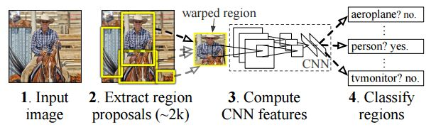

“Region-based Convolutional Networks for Accurate Obeject Detection and Segmentation”
*应用于物体定位与识别
摘要
由于历史原因，目前物体识别算法在PASCAL VOC测试上的良好表现均源自于使用由多种低级图像描述子组成的复杂检测系统。
在本篇论文中，我们提出一种简单且通用的识别算法，以期改进识别的mean average precision(mAP)。
我们的论文由两个基本观念组成：
-
我们使用卷积神经网络自底向上地建立区域概率来完成目标的定位和分割工作
(one can apply high-capacity convolutional networks(CNN) to bottom-up region proposals in order to localize and segment obejcts)
-
当使用特定的训练集训练好了用于识别的神经网络后，针对具体的分割定位任务进行fine-tune, 可以获得显著的效果提升(when labeled training data are scarce,supervised pre-training for an auxilliary task, followed by domain-specific fine-tune,boosts performance significantly)
1.论文的主要贡献：
-
与图像分类不同，检测需要物体的定位信息。一个有效地设想是把图像检测当做一个回归问题(regression problem)来考虑，这样的方案可以有效地检测到单个物体，但在识别多个物体时，需要复杂的额外定位工作。另外一个设想是建立滑窗检测器(sliding-window detector)，卷积神经网络在近二十年内都是被用作滑窗检测器来进行人脸、手、行人检测，这种方案计算效率较高，但是它需要检测目标具有相同的长宽比(aspect ratio)，长宽比问题可以使用混合模型(mixture model)方法来解决。
-
本文使用“区域识别”方法(recognition using regions)来解决定位问题。在识别过程中，我们生成了2000类相互独立的可能区域(region proposals),然后使用线性SVMs进行分类。我们使用图像缩放技术(anisotropic image scaling)来将输入到CNN中的图像固定成相同尺寸。
-
本文解决的第二个问题是利用fine_tune进行定位效果的提升这一流程的建立

2.相关工作
- Deep CNNs for object detection.
- Scalbility and speed.
- Localization methods.
- Transfer learning.
- R-CNN extensions.
3.模块设计
### 3.1 Module design
- 为了计算可能区域，我们首先需要利用CNN来快捷方便地生成特征。我们使用矩形框将目标区域标出并归一化成一定的长宽。
In order to compute features for a region proposal, we must first convert the image data in that region into a form that is compatibel with the CNN,
its architecture requires inputs of a fixed S * S pixel size, we warp all pixels in a tight bounding box around it to the requires size.
3.2 Test-time detection
-
我们使用前向神经网络在2000个可能区域提取特征，针对每一个类图像，我们使用SVM根据神经网络生成的特征训练判别模型，随后我们使用非极大值抑制获得最佳结果区域候选框。
We warp each proposal and forward propagate it through the CNN in order to compute features.Then, for each class, we score each extracted feature vector using the SVM trained for that class.Given all scored regions in an images, we apply a greedy non-maximum suppression that rejects a region if it has an intersection-over-union overlap with a higher scoring selected region larger than a learned threshold.
-
使用RCNN进行定位识别任务有如下几个优势
- 所有类别的生成特征神经网络共享同一套参数 all CNN parameters are shared across all categories
- 使用CNN得到的特征与其他方法获得的特征相比具有更低的维度 Second the feature vectors computed by the CNN are low-dimensional when compared to other common approaches.
- 在当前系统中需要关心的参数是 SVM权重 以及 非极大值抑制, 其中 CNN生成的特征矩阵为 2000 * 4096 而 SVM 权重矩阵为 4096 * N，N为定位任务的类别数
分析指出，RCNN可以识别出上千种类型(analysis shows that R-CNNs can scale to thousands of object classed without resorting to approximate thechniques.)
3.3 Trainning
- Supervised pre-training
- 我们使用ILSVRC2012分类挑战的数据进行预训练。
- Domain-specific fine-tuning
- 为了将CNNC应用到detection任务中，我们在预训练的神经网络上，输入目标的warped region proposals，使用随机梯度下降法来更新网络的参数。除了将ImageNet 1000分类的softmax层替换成随机初始化的（N+1）分类层，整个神经网络的结构不变。例如在VOC中N=20，而在ILSVRC2013中N=200。
- 在训练过程中，我们将于目标区域有0.5以上IoU的区域视为正样本，背景区域识为负样本。
- SGD的学习率为0.001，在每一次SGD迭代过程中，采样32个正样本和96个负样本，用来构成128个样本的mini-batch，这样安排比例是因为有效区域的面积是远小于背景区域面积的，而针对VGG网络，由于其网络参数较多，运用缓存较大，可适当减少mini-batch的个数
4.分析
5.ILSVRC2013 DETECTION DATASET
5.3 结果表格

6 SEMANTIC SEGMENTATION
- 我们针对CPMC区域使用了三种策略：
- 第一种策略，忽略区域形状，直接根据形变后的区域计算CNN特征，但这个方法不适用于非矩形区域
- 第二种策略，根据区域的前景掩膜计算CNN特征，我们将背景区域替换成预先计算好的均值，所以在进行了均值归一化后，背景的值为0。(background regions are zero after mean subtraction)
- 第三种策略，结合了第一种和第二种策略。
7 实现细节